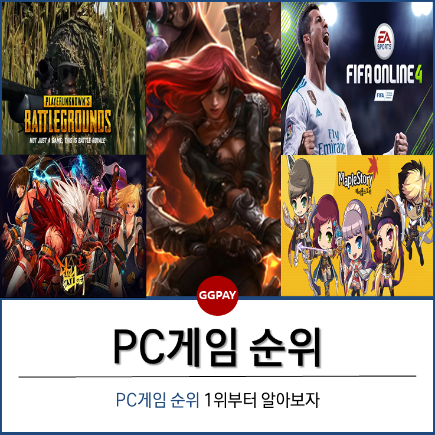

인터넷을 통해 멀티플레이가 가능하도록 고안된 멀티미디어형 게임으로 정의되는 온라인 게임은 아케이드, 시뮬레이션, 역할수행 등 세가지 장르로 구분된다. 온라인 게임에서는 일반 컴퓨터 게임과 달리 게이머-텍스트 상호작용과 게이머-게이머 상호작용, 두 가지가 이루어진다. 온라인 게임을 둘러싸고 길드, 게임방, 프로게이머 등 독특한 문화가 형성된다.
온라인 게임은 이러한 "컴퓨터 게임이 인터넷이나 LAN과 같은 컴퓨터 통신망에서 작동할 수 있도록 구현된 것"이라고 일단 정의할 수 있다. 그렇다면 컴퓨터 게임을 온라인으로 구현해 주는 컴퓨터 통신망은 어떤 것이 있는가? 이는 크게 서버 접속 방식과 사용자 직접 접속 방식으로 나뉘는데, 전자에는 배틀넷과 같은 특정 서버에 접속하여 게임을 즐기는 방식이 해당되며, 후자에는 인트라넷이 구축된 컴퓨터 환경에서 특정 서버에 접속하지 않고 IPX 프로토콜을 이용하여 접속하는 방식, 모뎀을 이용한 PC간 직접 접속 방식, 그리고 시리얼 또는 패럴렐 케이블을 이용한 PC간 직접 접속 방식이 해당된다. 전자를 이용한 게임으로는 다시, 다음 항의 역사에 대한 서술에서 보는 바와 같이, 텍스트 기반의 게임, 전자우편을 이용한 게임, 다이얼업 서비스 게임, 온라인 비디오 게임, 인터넷 게임 등을 들 수 있다.
우리나라에서는 1994년 마리텔레콤에 의해 〈단군의 땅〉이 출시된 이후 매년 많은 게임이 개발되고 있다. 세계 최고 수준에 이르는 초고속인터넷 및 휴대폰 보급에 힘입어 온라인게임과 모바일게임을 포함한 게임산업의 규모는 영화 및 음악시장을 합친 것보다 2배 이상 크며, 그 규모는 갈수록 더 커지는 추세이다. 온라인게임리그가 인기를 끌고, 온라인게임을 전문적으로 중계하는 유선방송도 있으며, 넷마블·배틀넷·엠게임·피망·한게임·넥슨 등의 사이트에서 온라인게임을 제공하기도 한다. 해외진출도 활발하여 중국과 대만, 일본, 동남아시아를 비롯하여 미국·유럽 등으로 게임을 수출하는 등 온라인게임의 세계 최강국으로 평가된다.

PC게임산업의 탄생 다큐.